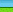
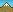

| P |
Liège > Liège |
 |
6.4km |
30 juin |
|
| 1 |
Liège > Seraing |
 |
198km |
1 juillet |
|
| 2 |
Visé > Tournai |
|
207.5km |
2 juillet |
|
| 3 |
Orchies > Boulogne-sur-mer |
|
197km |
3 juillet |
|
| 4 |
Abbeville > Rouen |
|
214.5km |
4 juillet |
|
| 5 |
Rouen > Saint-Quentin |
|
196.5km |
5 juillet |
|
| 6 |
Epernay > Metz |
|
207.5km |
6 juillet |
|
| 7 |
Tomblaine > La Planche des Belles Filles |
|
199km |
7 juillet |
|
| 8 |
Belfort > Porrentruy |
|
157.5km |
8 juillet |
|
| 9 |
Arc-et-Senans > Besançon |
|
41.5km |
9 juillet |
|
| 10 |
Mâcon > Bellegarde-sur-Valserine |
 |
194.5km |
11 juillet |
|
| 11 |
Albertville > La Toussuire |
|
148km |
12 juillet |
|
| 12 |
St-Jean-de-Maurienne > Annonax Davézieux |
|
226km |
13 juillet |
|
| 13 |
St-Paul-Trois-Châteaux > Le Cap d'Agde |
|
217km |
14 juillet |
|
| 14 |
Limoux > Foix |
|
191km |
15 juillet |
|
| 15 |
Samatan > Pau |
|
158.5km |
16 juillet |
|
| 16 |
Pau > Bagnères-de-Luchon |
|
197km |
18 juillet |
|
| 17 |
Bagnères-de-Luchon > Peyragudes |
|
143.5km |
19 juillet |
|
| 18 |
Blagnac > Brive-la-Gaillarde |
|
222.5km |
20 juillet |
|
| 19 |
Bonneval > Chartres |
|
53.5km |
21 juillet |
|
| 20 |
Rambouiller > Paris Champs-Elysées |
|
120km |
22 juillet |
|